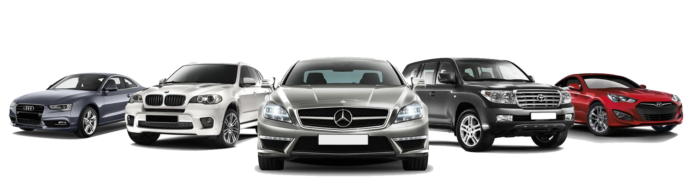
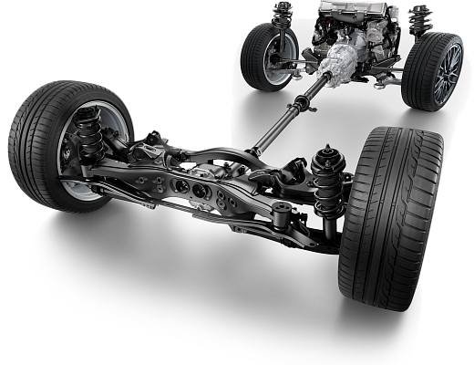
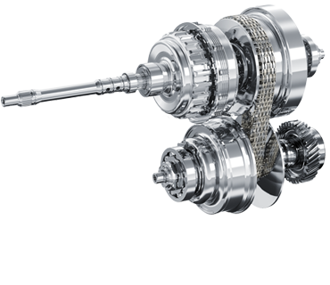
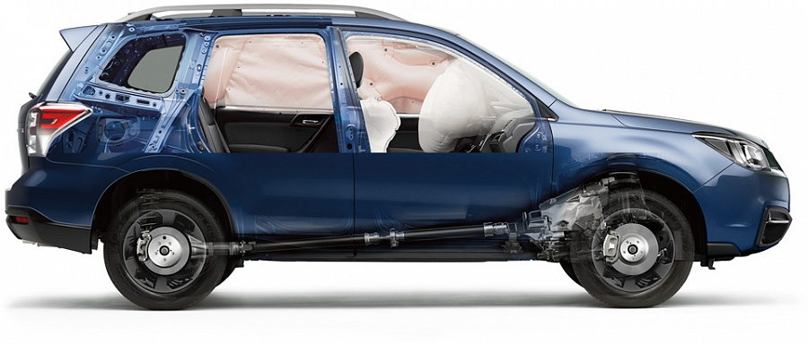

Выбор и покупка нового автомобиля - достаточно волнующий процесс, поэтому мы прилагаем все усилия для того, чтобы вся процедура оформления прошла для Вас максимально гладко и оставила исключительно приятные впечатления. Приглашаем Вас оценить самые яркие преимущества крупнейшего автосалона Ялты - «ООО Крым-Авто-Дилер»:
быстрое оформление кредита по лояльным процентным ставкам;
страхование в солидных компаниях по самым надежным программам.
А так же акции, солидные скидки и ценные подарки – и все это для Вас!
Безупречная репутация и сотни положительных отзывов – наша особая гордость, и сегодня стать одним из благодарных клиентов можете и Вы! Обращайтесь в крупнейший автосалон в Москве «Центральный» - и удачных Вам дорог! Наш адрес на картах и телефоны можно найти на странице «Контакты»!

 В настоящее время на обычных автомобилях используются три типа привода: привод на передние колеса (FWD), привод на задние колеса (RWD) и привод на все колеса (4WD).Уже в начале своей истории компания Subaru сделала ставку на полный привод, который в те времена применяли только для специальных автомобилей. Для лучшего понимания рассмотрим влияние каждого типа привода на динамические качества автомобиля. Поскольку эти качества во многом зависят от свойств шин, отвечающих за связь между автомобилем и поверхностью дороги.
 Трансмиссия Lineartronic — первая бесступенчатая вариаторная трансмиссия продольного расположения цепного типа, устанавливаемая на серийно выпускаемый автомобиль. Это идеальный механизм передачи плавной мощи двигателя Subaru BOXER и надежное управление системой симметричного полного привода Subaru. Трансмиссия Lineartronic дарит ощущение плавности движения и отсутствия каких-либо переключений передач.
 Когда речь идет о безопасности автомобиля, обычно подразумевается минимизация последствий при столкновении. Однако конечной целью является предотвращение самих столкновений в целом. Концепция безопасности Subaru, а также проверенный временем потенциал горизонтально-оппозитного двигателя SUBARU BOXER и симметричного полного привода Symmetrical AWD дает возможность водителю с любым опытом сохранить контроль над своим автомобилем и избежать столкновения.